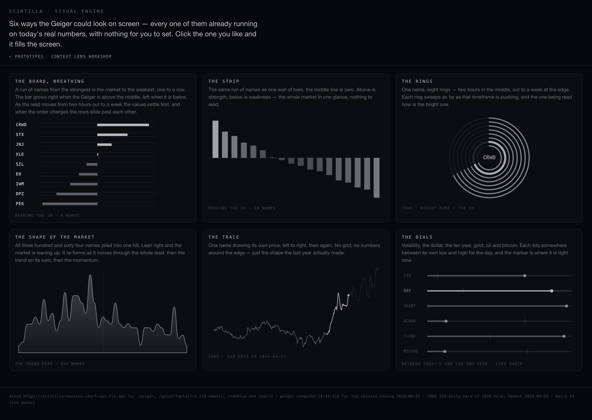
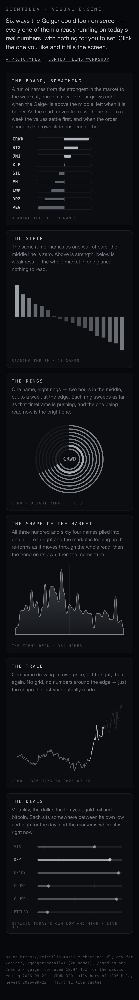
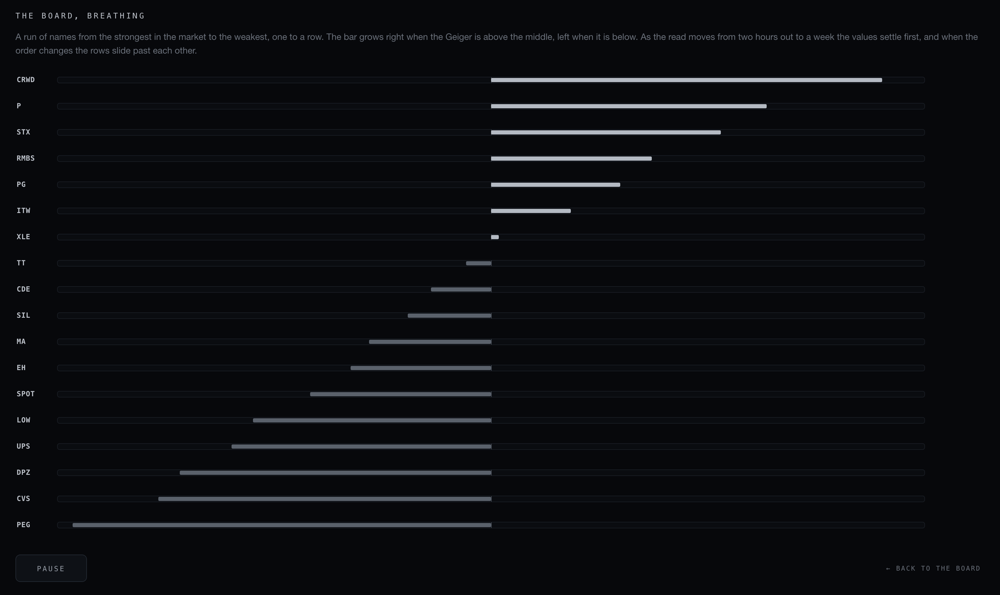
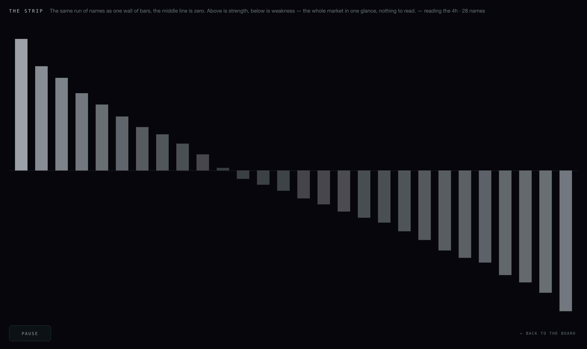
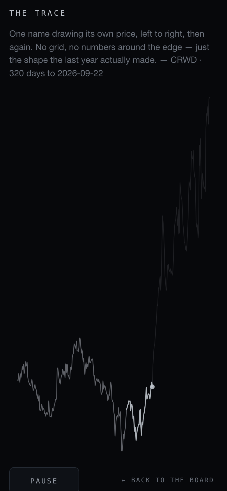
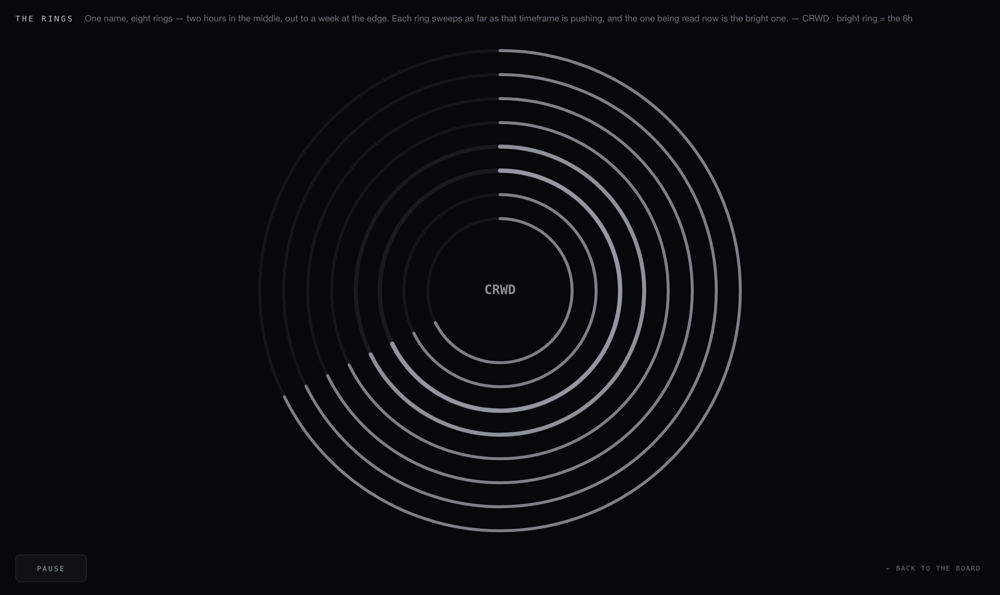
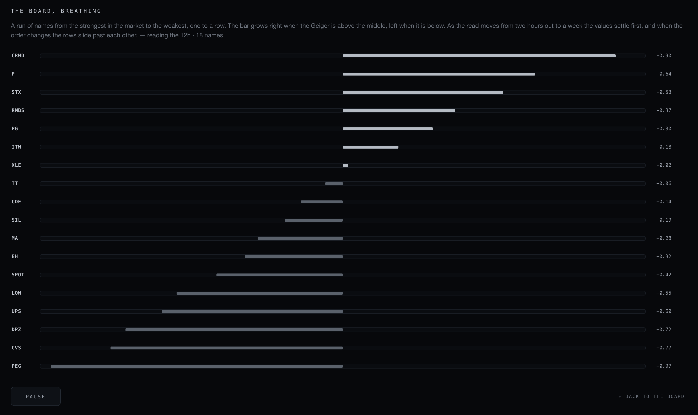

SCINTILLA · VISUAL ENGINE · 23 SEP 2026
The Visual Engine is no longer a workbench with a control panel. It is a mood board: six ways the Geiger could look, all six already running on today's real numbers, nothing to set. Click one and it fills the screen, with one button.
"Dude, this is so many fucking buttons. I need like a mood board type thing. What is all of this? Why does this require so much input of mine? I don't even get how to play it. This does not seem like a menu. These seem like toggles."
What changed
| Before | Now |
|---|---|
| 22 controls across a sticky panel: two sliders, eight buttons, a ticker dropdown, five radio picks, a scrubber. | No control panel. One button exists on the whole page — play/pause — and it only appears once a tile is open. |
| One visual at a time, chosen by setting the controls first. | Six tiles, all moving at once. The choice is made by looking, not by configuring. |
| The page opened cold and waited for you. | It opens already running on the live read, and says in one sentence what it is for. |
| Green, red, cyan, purple, yellow. | Monochrome. Above the middle is a brighter grey, below is a darker one — direction is position, never colour. |
The six
| Tile | What it is | What it runs on |
|---|---|---|
| The board, breathing | A run of names from the strongest to the weakest, one to a row. The read moves from two hours out to a week; the values settle first, and when the order changes the rows slide past each other. | /geiger?detail=1, per timeframe |
| The strip | The same run as one wall of bars around a zero line. The whole market in a glance. | /geiger?detail=1 |
| The rings | One name, eight rings — two hours in the middle, a week at the edge. Each ring sweeps as far as that timeframe is pushing; the one being read is the bright one. | /geiger?detail=1 |
| The shape of the market | All 364 names piled into one hill that re-forms as it moves through the whole read, then the trend alone, then the momentum. | /geiger, 364 names |
| The trace | One name drawing its own price, left to right, then again. No grid, no numbers round the edge. | /candles, daily bars |
| The dials | Volatility, the dollar, the ten year, gold, oil and bitcoin, each sitting between its own low and high for the day. | /macro, live quotes |
The board, as it looks


One click, full size




Six frames, a second and a half apart
The read walks from two hours out to a week on its own. These are consecutive frames of the same screen, a second and a half apart: the bars change length, the numbers appear once everything has settled, and when the order changes the rows swap places.

What it is running on
- Everything comes from the chart API,
scintilla-massive-chart-api.fly.dev:/geigerfor all 364 names,/geiger?symbols=…&detail=1for the per-timeframe read,/candlesfor the price trace,/macrofor the live quotes. Nothing is invented and nothing is stored here. - The numbers refresh every 90 seconds; the tiles redraw the moment new ones land.
- If a feed does not answer, the page says so in words at the foot of the page, and the tile that needed it says no reading rather than drawing a zero.
- If your system asks for reduced motion, nothing moves by itself and the page says that too.
- The movement is the one already agreed: values settle first, then rows slide, near-ties hold their place, and while rows are moving only the name and the bar are showing.
Honest limits
- The screenshots were taken on this machine against the live API. The API only accepts browser calls from
scintillahub.ai, so the local capture ran with that check relaxed — the data in every picture is the real answer from the API at 18:28Z on 23 September. - The rings, the board and the strip use the per-timeframe read for 28 names, an even cross-section from the strongest name to the weakest — not all 364, which would be 364 requests.
- Nothing has been deployed or pushed. This is a branch for you to look at.